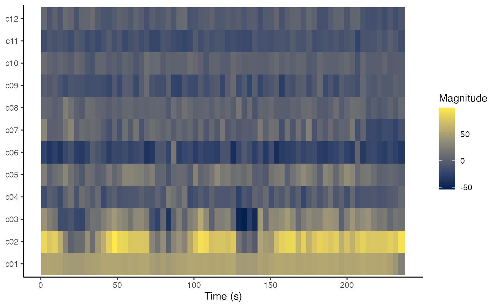
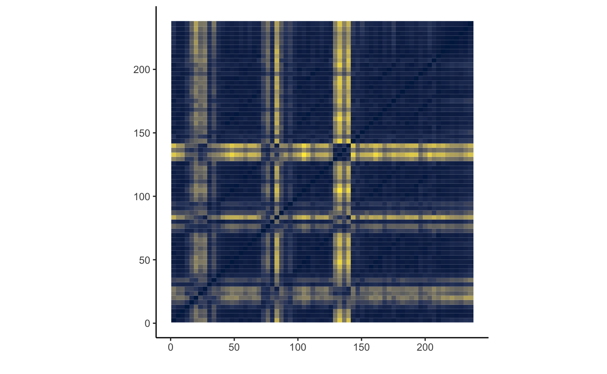

compmus-w09.Rmd## ── Attaching packages ─────────────────────────────────────────────────────────────────────────────────────── tidyverse 1.2.1 ──## ✔ ggplot2 3.1.0 ✔ purrr 0.3.2
## ✔ tibble 2.1.1 ✔ dplyr 0.8.0.1
## ✔ tidyr 0.8.3 ✔ stringr 1.4.0
## ✔ readr 1.3.1 ✔ forcats 0.4.0## ── Conflicts ────────────────────────────────────────────────────────────────────────────────────────── tidyverse_conflicts() ──
## ✖ dplyr::filter() masks stats::filter()
## ✖ dplyr::lag() masks stats::lag()##
## Attaching package: 'compmus'## The following object is masked from 'package:spotifyr':
##
## get_playlist_audio_featuresIn order for the code below to run, it is also necessary to set up Spotify login credentials for spotifyr.
Last week, we used several custom functions to work with the Spotify API:
get_tidy_audio_analysis to load audio analyses from Spotify, one track at a timecompmus_normalise to normalise audio features using common techniques, including:
manhattaneuclideanchebyshevcompmus_long_distance to compare to series of audio features against each other using common distance metrics, including:
manhattanaitchisoneuclideancosineangularThis week, we have a few new custom functions.
compmus_align aligns two levels of structure with each other, e.g., Spotify segments with beats or bars.compmus_summarise helps to summarise features within higher levels of structure, including:
meanacentre [Aitchison centre]rms [root mean square]max| Domain | Normalisation | Distance | Summary Statistic |
|---|---|---|---|
| Non-negative (e.g., chroma) | Manhattan | Manhattan | mean |
| Aitchison | Aitchison centre | ||
| Euclidean | cosine | root mean square | |
| angular | root mean square | ||
| Chebyshev | [none] | max | |
| Full-range (e.g., timbre) | [none] | Euclidean | mean |
| Euclidean | cosine | root mean square | |
| angular | root mean square |
The following examples from Andre Hazes’s ‘Bloed, Zweet en Tranen’ highlight how to use these functions. Can you choose better combinations of normalisations, distances, and summary statistics?
bzt <-
get_tidy_audio_analysis('5ZLkc5RY1NM4FtGWEd6HOE') %>%
compmus_align(bars, segments) %>%
select(bars) %>% unnest(bars) %>%
mutate(
pitches =
map(segments,
compmus_summarise, pitches,
method = 'rms', norm = 'euclidean')) %>%
mutate(
timbre =
map(segments,
compmus_summarise, timbre,
method = 'mean'))We can use compmus_gather_timbre much like compmus_gather_chroma last week to yield a cepstrogram. Try different levels of structure – Spotify’s estimates of beats, bars, or sections – to see which level is the most meaningful.
bzt %>%
compmus_gather_timbre %>%
ggplot(
aes(
x = start + duration / 2,
width = duration,
y = basis,
fill = value)) +
geom_tile() +
labs(x = 'Time (s)', y = NULL, fill = 'Magnitude') +
scale_fill_viridis_c(option = 'E') +
theme_classic()
The function compmus_self_similarity is a wrapper around compmus_long_distance from last week, for the case where the distances are computed form the same track. Try different distance functions to see what is most useful for this track – and compare your results with a self-similarity matrix based on chroma.
bzt %>%
compmus_self_similarity(timbre, 'cosine') %>%
ggplot(
aes(
x = xstart + xduration / 2,
width = xduration,
y = ystart + yduration / 2,
height = yduration,
fill = d)) +
geom_tile() +
coord_fixed() +
scale_fill_viridis_c(option = 'E', guide = 'none') +
theme_classic() +
labs(x = '', y = '')